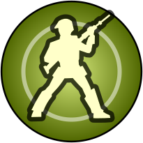

Current
Arrakeen
Yields a victory point at end of turn.
Harvesters: when occupied, grants a Spice collection rate of 3-per-force.
Ornithopters: when occupied, your forces can move up to 3 territories.
Yields 2 at end of turn when occupied.
at end of turn when occupied.
 Protected
Protected
Protected
Protected

2Only spice and the hazards have a glyph. The first line has no label, so it does not read as a sibling of the two labelled lines.
A · glyph leads each line
Arrakeen
Stronghold: yields a victory point at end of turn.
Harvesters: when occupied, grants a Spice collection rate of 3-per-force.
Ornithopters: when occupied, your forces can move up to 3 territories.
Yields 2 at end of turn when occupied.
Protected
Protected
Smallest change. Adds a Stronghold label so the three lines match. Centered text makes the glyphs land at different x positions, so they do not form a column to scan down.
B · one row per feature
Arrakeen
Protected
Protected
Left-aligned rows with the glyph in the same 28px circle the chips use. The spice line becomes a row too, so the spice glyph does the same job as the others. Hazard chips stay as they are.
C · trait, then value
Arrakeen
Spice flow+2 / turn
SandwormProtected
StormProtected
Everything is a chip with a value, hazards included. Very scannable and half the height, but "when occupied" is gone, and a first-time player cannot learn the rule from it.